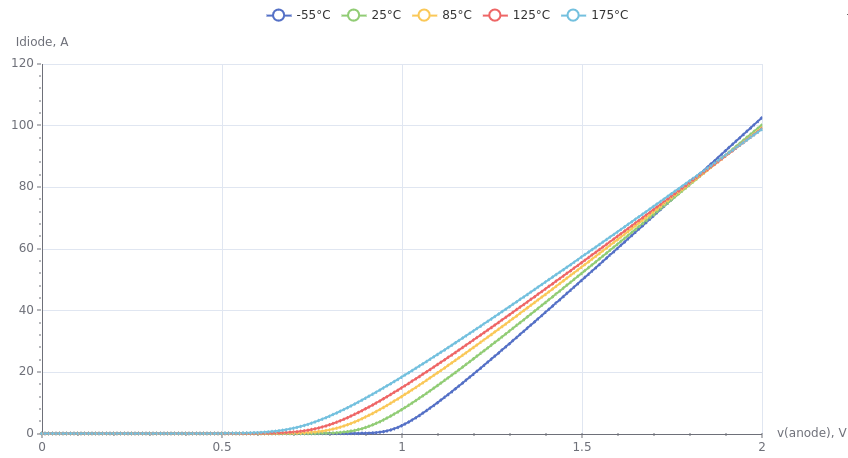
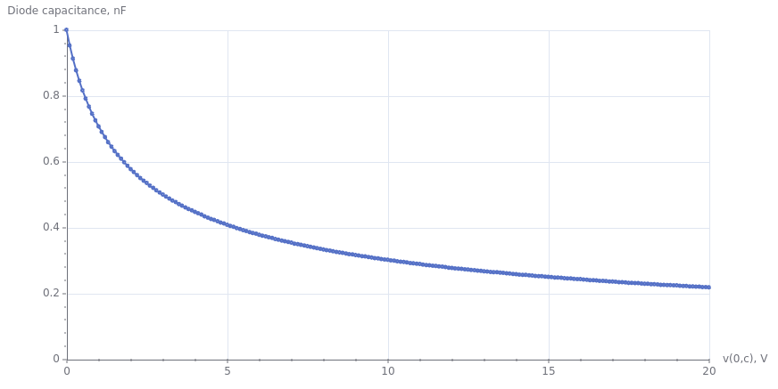
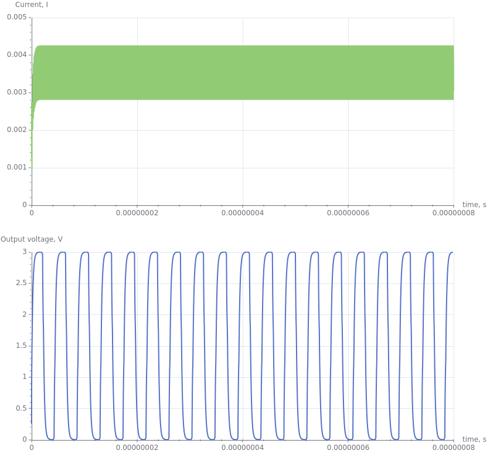

TutorialsTop, Main, Index
Tutorials in this section describes examples from folder examples in root directory of SpiceGenTcl. List of availible tutorials:
- Netlist manipulations - "examples/netlist_manipulations.tcl" file
- Subcircuit definition - "examples/subcircuit.tcl" file
- Diode current simualtion - "examples/diode_iv.tcl" file
- Diode capacitance simualtion - "examples/diode_cv.tcl" file
- [Sensitive analysis of differential pair] - "examples/diffpair_sens.tcl" file
- Transient simulation of ring oscillator - "examples/transient/switch_oscillator.tcl" file
- [Transient simulation of four-bit adder] - "examples/transient/fourbitadder.tcl" file
Netlist manipulationsTop, Main, Index
In this example we will examine the availible actions that we can do on elements in netlist. First step is building the target netlist with variable elements:
# create netlist
set netlist [Netlist new main_netlist]
# incrementally build netlist by adding different elements
$netlist add [R new 1 net1 net2 10]
$netlist add [RSem new 5 net1 net2 res_sem -l 10e-6 -w 100e-6]
$netlist add [RSemModel new rsem1mod -tc1 0.1 -tc2 0.4]
$netlist add [R new 2 net1 net2 {{r1+5/10} -eq}]
$netlist add [C new 1 net2 net3 1e-6]
$netlist add [ParamStatement new {{r1 1} {r2 2}} -name ps1]
$netlist add [Comment new {some random comment} -name com1]
$netlist add [Include new {/fold1/fold2/file.lib} -name inc1]
$netlist add [Library new {/fold1/fold2/file.lib} fast -name lib1]
$netlist add [RawString new {*comment in form of raw string} -name raw1]
$netlist add [Vdc new 1 net1 net3 5]
$netlist add [Tran new 1e-6 1e-3 -uic -name tran1]
Here we can see the add method that adds elemements objects references to Netlist object. To view netlist we can invoke method genSPICEString that have all circuit elements:
# generate SPICE netlist puts [$netlist genSPICEString]
Result is:
r1 net1 net2 10
r5 net1 net2 res_sem l=10e-6 w=100e-6
.model rsem1mod r(tc1=0.1 tc2=0.4)
r2 net1 net2 {r1+5/10}
c1 net2 net3 1e-6
.param r1=1 r2=2
*some random comment
.include /fold1/fold2/file.lib
.lib /fold1/fold2/file.lib fast
*comment in form of raw string
v1 net1 net3 5
.tran 1e-6 1e-3 uic
Delete elementTop, Main, Index
The opposite action is delete with method del. For example, we can delete 'c1' element from netlist by specifiying its name:
$netlist del c1 puts [$netlist genSPICEString]
Result is:
r1 net1 net2 10
r5 net1 net2 res_sem l=10e-6 w=100e-6
.model rsem1mod r(tc1=0.1 tc2=0.4)
r2 net1 net2 {r1+5/10}
.param r1=1 r2=2
*some random comment
.include /fold1/fold2/file.lib
.lib /fold1/fold2/file.lib fast
*comment in form of raw string
v1 net1 net3 5
.tran 1e-6 1e-3 uic
As you can see, capacitor 'c1' is no more in netlist.
Get elementTop, Main, Index
Next important operation is getting reference of element in netlist. We can do it again by specifying its name:
# get reference of resistor object set resistor [$netlist getElement r1]
After it, we can change the resistance parameter of element:
# change the value of resistor in circuit $resistor setParamValue r 100
We apply method setParamValue with two arguments: name of parameter 'r' and its new value '100'. The other action we can do is change the pin connection of element:
# change the name of connected net to plus pin $resistor setPinNodeName np net10
We use method setPinNodeName with pin name and name of the net as arguments.
Then we can again print netlist and see that value of parameter and name of connected name have been changed:
r1 net10 net2 100
r5 net1 net2 res_sem l=10e-6 w=100e-6
.model rsem1mod r(tc1=0.1 tc2=0.4)
r2 net1 net2 {r1+5/10}
.param r1=1 r2=2
*some random comment
.include /fold1/fold2/file.lib
.lib /fold1/fold2/file.lib fast
*comment in form of raw string
v1 net1 net3 5
.tran 1e-6 1e-3 uic
Print list of all elementsTop, Main, Index
We can get the list of all elements attached to $netlist object:
# get and print all names of elements attached to $netlist puts [$netlist getAllElemNames]
Result:
r1 r5 rsem1mod r2 ps1 com1 inc1 lib1 raw1 v1 tran1
Temporarly remove of elementTop, Main, Index
We can delete element from netlist and store reference to elements object, and then again add element to netlist:
set r1 [$netlist getElement r1] $netlist del r1 $netlist add $r1
Also, we can save reference to object before adding to netlist in variable and only then add it to netlist:
set r5 [R new 5 net1 net2 10] $netlist add $r5
In this case we can directly modify 'r5' parameters without necessity to call getElement method.
Subcircuit definitionTop, Main, Index
To create subcircuit definition we use special Subcircuit class and make subcircuit by defining new class with Subcircuit as superclass:
oo::class create RCnet {
superclass Subcircuit
constructor {} {
# define external pins of subcircuit
set pins {plus minus}
# define input parameters of subcircuit
set params {{r 100} {c 1e-6}}
# add elements to subcircuit definition
my add [R new 1 net1 plus {r -eq}]
my add [C new 1 net2 net3 {c -eq}]
my add [RSem new 5 minus net2 res_sem -l 10e-6 -w 100e-6]
my add [RSemModel new rsem1mod -tc1 0.1 -tc2 0.4]
# pass name, list of pins and list of parameters to Subcircuit constructor
next rcnet $pins $params
}
}
In constructor of this class we define pins as list with names in order of appearance in subcircuit header:
set pins {plus minus}
Then we define parameters as list of two-elements list that contains name and default value of parameter:
set params {{r 100} {c 1e-6}}
Next step is adding elements to subcircuit:
my add [R new 1 net1 plus {r -eq}]
my add [C new 1 net2 net3 {c -eq}]
my add [RSem new 5 minus net2 res_sem -l 10e-6 -w 100e-6]
my add [RSemModel new rsem1mod -tc1 0.1 -tc2 0.4]
The last action is to pass name of subcircuit, list of pins and parameters to constructor of superclass:
next rcnet $pins $params
Name passed to superclass constructor rcnet is not necessarily the same as name of the class, this name will be printed in subcircuit definition in netlist.
To create and add this definition to netlist, we use name of the class RCnet:
# create subcircuit definition set subcircuit [RCnet new] # add to netslit $netlist add $subcircuit
But place definition of subcircuit is not enough - we need to place netlist instance of subcircuit. We can do it by using two mechanisms:
- use
SubcircuitInstanceclass - use
SubcircuitInstanceAutoclass
First way is direct construction of element by providing pins and parameter lists:
# create subcircuit instance
set subInst [SubcircuitInstance new 1 {{plus net1} {minus net2}} rcnet {{r 1} {c cpar -eq}}]
But the second way is simpler and allow to check if we have mistake in definition:
# create subcircuit instance with help of already created subcircuit definition $subcircuit
set subInst1 [SubcircuitInstanceAuto new $subcircuit 2 {net1 net2} -r 1 -c {cpar -eq}]
In this approach we pass reference of our subcircuit as first argument. Then we need only pass list of net connected to pins in the order of pins definition in subcircuit, and parameters in form of -paramName paramValue. If you try to add parameter that does not exist in subcircuit definition you'll got the error.
The final circuit is:
.subckt rcnet plus minus r=100 c=1e-6
r1 net1 plus {r}
c1 net2 net3 {c}
r5 minus net2 res_sem l=10e-6 w=100e-6
.model rsem1mod r(tc1=0.1 tc2=0.4)
.ends
x1 net1 net2 rcnet r=1 c={cpar}
x2 net1 net2 rcnet r=1 c={cpar}
Diode current simualtionTop, Main, Index
In this example we look at the parametric simulation of diode model current curve, the parameter is ambient temperature. To do this, we should run simulation multiple times with different temperature, save results after each iteration and then add them at one plot. As in previous examples, we create top circuit, and add elements to it:
# create top-level circuit
set circuit [Circuit new {diode IV}]
# add elements to circuit
$circuit add [D new 1 anode 0 diomod -area 1 -lm 1e-6]
$circuit add [Vdc new a anode 0 0]
$circuit add [DiodeModel new diomod -is 1e-12 -n 1.2 -rs 0.01 -cj0 1e-9 -trs1 0.001 -xti 5]
$circuit add [Dc new va 0 2 0.01]
In upper block of code we add diode instance with D new command, add corresponding diode model with DiodeModel new command, DC voltage source that will be swept and DC analysis statement. Voltage change is from 0 to 2 volts, so we get forward current characteristic.
The temperature in Ngspice is set with .temp statement, so we create instance of it with Temp new command, save object reference in variable tempSt and add it to circuit :
# add .temp set tempSt [Temp new 25] $circuit add $tempSt
Then we create array containing temperature values and create Simulator class object:
# add temperature sweep
set temps [list -55 25 85 125 175]
# set simulator with default
set simulator [Batch new {batch1} {/usr/local/bin/}]
# attach simulator object to circuit
$circuit attachSimulator $simulator
The only thing that left is to set temperature value in Temp class object, run circuit, save data and repeat multiple times:
# run circuit, change temperature, read log and data
foreach temp $temps {
$tempSt setValue $temp
$circuit runAndRead
# print log output to terminal
puts [$circuit getLog]
# get data object
set data [$circuit getDataDict]
lappend axisList [dict get $data v(anode)]
lappend traceList [dict get $data i(va)]
}
And plot the results:
# plot results with plotchart
wm geometry . 600x400
set xyp [xyplot .xyp -xformat "%.2f" -yformat "%.2f" -title "Diode IV curves" -xtext "v(anode,0), V" -ytext "Idiode, A"]
pack $xyp -fill both -expand true
set i 0
set colors [list red blue green black orange]
foreach axis $axisList trace $traceList {
foreach x $axis y $trace {
lappend xydata $x [* -1.0 $y]
}
$xyp add_data sf$i $xydata -legend "temp=[lindex $temps $i]" -color [lindex $colors $i]
unset xydata
incr i
}
On the picture you can see how temperature affects the forward current of diode, and because we have temperature dependence of series resistance, we get point of zero temperature coefficient when all lines cross each other near 1.8V:

Diode capacitance simualtionTop, Main, Index
In this example we get volt-farad (or capacitance-voltage) of diode depletion charge. To accomplish this, we need to apply negative voltage bias to anode, and do AC simulation at single frequency. Then we can repeat this multiple times at different voltage, collect all results and then finally plot the whole curve. We calculate capacitance value with equation:
⎛I⎞
-Im ⎜─⎟
⎝V⎠
C = ────────────
2 ⋅ π ⋅ freq
where I and V - voltage and current phasors, freq - frequency of applied AC signal. First, we can define π constant manually, or borrow the value from ::math::constants library:
package require math::constants ::math::constants::constants pi
We again go through the circuit building sequence:
# create top-level circuit
set circuit [Circuit new {diode CV}]
# add elements to circuit
$circuit add [D new 1 0 c diomod -area 1 -lm 1e-6]
set vdc [Vdc new a c nin 0]
$circuit add $vdc
$circuit add [Vac new b nin 0 1]
$circuit add [DiodeModel new diomod -is 1e-12 -n 1.2 -rs 0.01 -cj0 1e-9 -trs1 0.001 -xti 5]
$circuit add [Ac new lin 1 1e5 1e5]
What are new here:
- AC voltage source
[Vac new b nin 0 1]- uses to generate AC signal - AC analysis statement
[Ac new lin 1 1e5 1e5]- uses to define AC frequency, 100 kHz in our case.
Nest step is to add voltage sweep:
# add voltage sweep set voltSweep [linspace 0 20.1 0.1]
Here we use procedure linspace that is imported from ./helperFuncs.tcl, it creates list of numbers from 0 to 20 with step 0.1.
Then we as usual, create Simulator class object, attach it to circuit, run it multiple times and collect results:
#set simulator with default
set simulator [BatchOutLog new {batch1} {/usr/local/bin/}]
# attach simulator object to circuit
$circuit attachSimulator $simulator
# loop in which we run simulation, change reverse biad and read the results
foreach volt $voltSweep {
#set reverse voltage bias
$vdc setParamValue dc $volt
# run simulation
$circuit runAndRead
set data [$circuit getDataDict]
lappend axisList [dict get $data v(c)]
# get imaginary part of current
lappend traceList [lindex [dict get $data i(va)] 0 1]
}
BatchOutLog simulator differs from batch in sense of stdout output printing - it prints output line by line during simulation, not only at ther end of it.
Here we collect imaginary value of current flowing through Va AC voltage source.
One question that you could ask - why we use two indexes, 0 and 1 when we extract values from the vector i(va)?
The answer is following: by first index we extract value from list of values at different frequencies, and by second we get imaginary value. The AC data vectors come in form:
{{reVal0 imVal0} {reVal1 imVal1} {reVal2 imVal2} ...}
where Val0 is the value at frequency with index 0, Val1 at frequency with index 1, Val2 is the value at frequency with index 2 and so on. Even if we have one frequency in AC analysis, we have to extract it with index 0.
Now we can plot the results, together with applying equation to calculate capacitance (voltage phasor is equal to 1 so we omit it):
# plot results with plotchart
wm geometry . 600x400
set xyp [xyplot .xyp -xformat "%.2f" -yformat "%.2e" -title "Diode CV" -xtext "v(0,c), V" -ytext "C, C"]
pack $xyp -fill both -expand true
foreach x $voltSweep y $traceList {
lappend xydata $x [expr {-$y/(2*$pi*1e5)}]
}
$xyp add_data sf0 $xydata -color red
As a result we got expected curve with decreasing capacitance value at higher reverse voltage:

Transient simulation of ring oscillatorTop, Main, Index
In this example we look at circuit with transient analysis, and also we will see how we can use Tcl script to build circuit that contains multiple stages of the same subcircuit.
Circuit is ring oscillator that is made from voltage-controlled switchs, this circuit was taken from Ngspice examples (/examples/p-to-n-examples/switch-oscillators.cir). Each stage of oscillator is simple two-switch inverter, the whole circuit contains 17 stages.
At the beggining we create class Inverter that describes inverter and create object:
# create class that represents inverter subcircuit
oo::class create Inverter {
superclass Subcircuit
constructor {} {
# define external pins of subcircuit
set pins {in out vdd dgnd}
# define input parameters of subcircuit
set params {}
# add elements to subcircuit definition
my add [C new l out dgnd 0.1e-12]
my add [C new 2 out vdd 0.1e-12]
my add [VSwitch new p out vdd vdd in swswitch]
my add [VSwitch new n out dgnd in dgnd switchn]
# pass name, list of pins and list of parameters to Subcircuit constructor
next inverter $pins $params
}
}
# create subcircuit definition instance
set inverter [Inverter new]
Next we define other elements and top-level circuit:
# create top-level circuit
set circuit [Circuit new {switch_oscillator}]
# add elements to circuit
$circuit add [Tran new 50e-12 80e-9]
$circuit add [Options new {{method gear} {maxord 3}}]
$circuit add [RawString new ".ic v(osc_out)=0.25"]
$circuit add $inverter
$circuit add [Vdc new dd vdd2 0 3]
$circuit add [Vdc new measure vdd2 vdd 0]
$circuit add [C new vdd vdd 0 1e-18]
Multiple stages of invertors we can add in loop, so it saves us many lines of code and allow to change the number of stages dynamically:
# add multiple inverters in the cycle
for {set i 1} {$i<16} {incr i} {
set ip1 [+ $i 1]
$circuit add [SubcircuitInstanceAuto new $inverter x${ip1} "n${i} n${ip1} vdd 0"]
}
After it we add first and last stages, as well as models of switches.
$circuit add [SubcircuitInstanceAuto new $inverter x18 {osc_out n1 vdd 0}]
$circuit add [SubcircuitInstanceAuto new $inverter x19 {n16 osc_out vdd 0}]
$circuit add [VSwitchModel new swswitch -vt 1 -vh 0.1 -ron 1e3 -roff 1e12]
$circuit add [VSwitchModel new switchn -vt 1 -vh 0.1 -ron 1e3 -roff 1e12]
Now we can run and read data:
#set simulator with default temporary directory
set simulator [BatchOutLog new {batch1} {/usr/local/bin/}]
# attach simulator object to circuit
$circuit attachSimulator $simulator
# run circuit, read log and data
$circuit runAndRead
# get data object
set data [$circuit getDataDict]
set axis [dict get $data time]
set vout [dict get $data v(osc_out)]
set imeas [dict get $data i(vmeasure)]
We save output waveform and power currents, and then plot it with xyplot package:
# plot results with plotchart
wm geometry . 600x400
set xyp1 [xyplot .xyp1 -xformat "%.2e" -yformat "%.2f" -title "Switch oscillator simulation result" -xtext "time, s" -ytext "v(out), V"]
set xyp2 [xyplot .xyp2 -xformat "%.2e" -yformat "%.2e" -title "Switch oscillator simulation result" -xtext "time, s" -ytext "i(vmeasure), V"]
pack $xyp1 -fill both -expand true
pack $xyp2 -fill both -expand true
foreach x $axis y1 $vout y2 $imeas {
lappend xyVout $x $y1
lappend xyImeas $x $y2
}
set s1 [$xyp1 add_data sf1 $xyVout -legend "v(out_osc)" -color red]
set s2 [$xyp2 add_data sf1 $xyImeas -legend "i(meas)" -color red]
